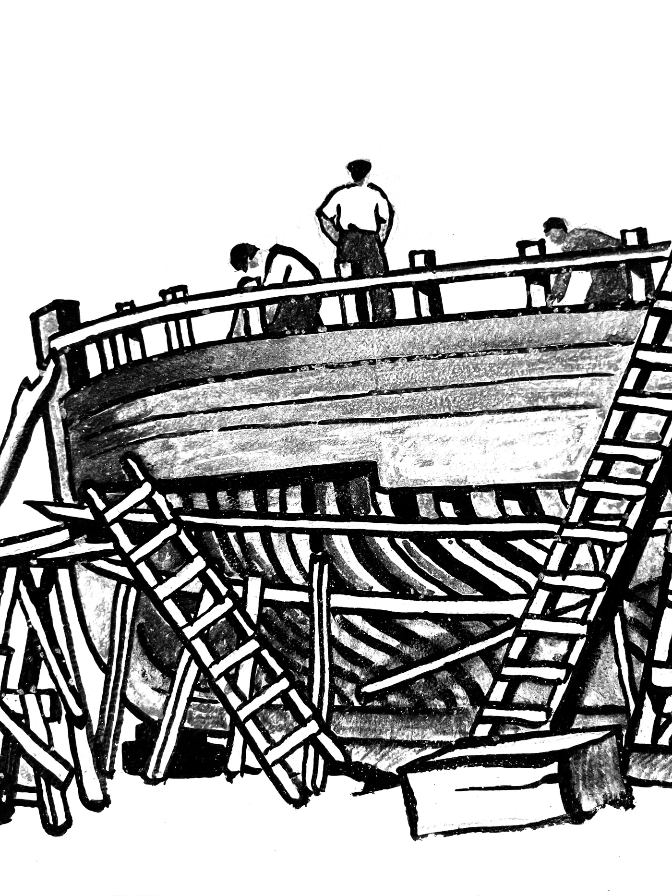

Association Maison du patrimoine maritime
Venez échanger avec les membres du bureau autour d'un café et pré-adhérez à l'association.

AU CARREFOUR DES ASSOCIATIONS DE 9H30 À 12H
SALLE SAINT-IVES, 1 RUE DU LOC'H
CAMARET-SUR-MER
Une nouvelle association est en train de naître à Camaret-sur-Mer, pour veiller sur la collection de la Salle de Venise et faire vivre le patrimoine maritime de la commune. Ses statuts ont été adoptés le 26 août 2026 et la déclaration a été déposée en sous-préfecture de Brest le 27 août. La publication au Journal officiel, qui achèvera sa création, n'est pas encore confirmée à ce jour.
Page mise à jour le 1er septembre 2026.
Faites glisser pour voir la suite
26 août
Assemblée générale constitutive, statuts adoptés
27 août
Dépôt des statuts en sous-préfecture de Brest
5 septembre
Carrefour des associations, salle Saint-Ives
19 septembre
Réouverture prévue de la Salle de Venise, Journées européennes du patrimoine
À venir
Publication au Journal officiel des associations